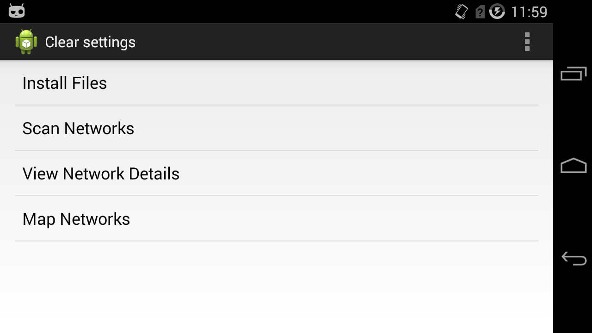
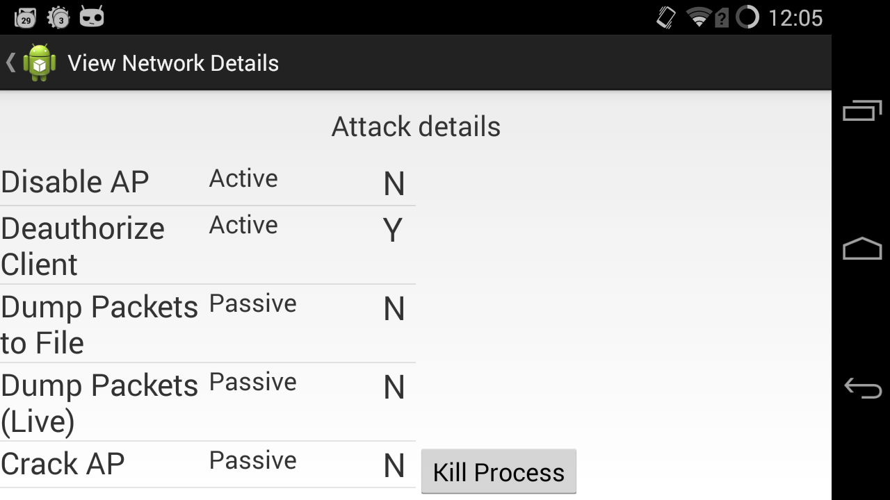
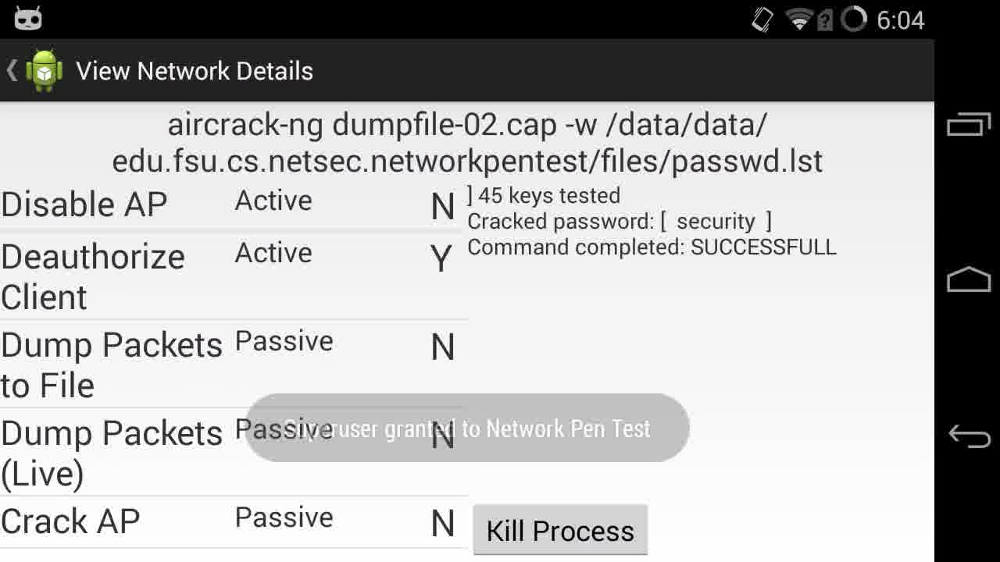

The security measures of a wireless network can be tested to reveal potential vulnerabilities, known as wireless network penetration testing. Most wireless network penetration test programs provide the necessary features for testing common vulnerabilities. However, these programs are often very expensive and too complicated to be used by a non-expert of computer security. As a result, we propose a new Android application which performs the necessary capabilities to test the security of a wireless network. The application will provide the following features: Network scanning, Man-in-the-Middle attacks, identifying network devices, fingerprinting operating systems, determining the strength and security protocols of a network, penetrating WEP/WPA/WPA2, impersonating SSID, detecting spoofed IPs, and sniffing traffic.
The application is developed for Android with the focus in mind for distribution and ease of use. Many of the features and algorithms for network penetration testing use the Aircrack-ng library. As a result, the Aircrack-ng library is cross-compiled for Android support. Furthermore, the application requires a rooted phone and custom kernel functions in order for the WiFi adapter to support promiscuity mode, however this can be avoided using an external WiFi adapter.